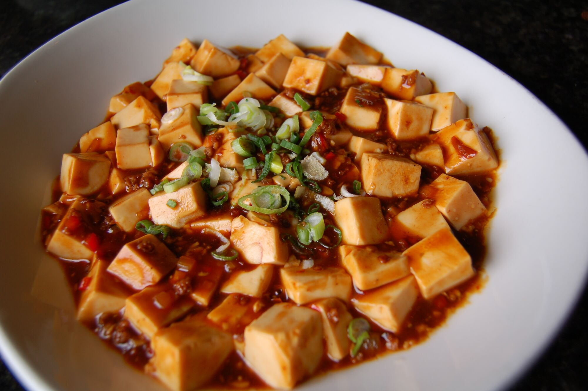

Mapo tofu
Based on a reddit recipe.
Basic Ingredients
- 230 g Soft tofu (嫩豆腐). Aim for the proper 'soft tofu' but slightly too firm is better than slightly too soft.
- ½ tbsp Sichuan peppercorns (花椒)
- 35 g Minced pork
- 2-3 Garlic cloves, minced
- 1½ tbsp Sichuan chili bean paste (川式豆瓣酱) Minced to break down any bean chunks. A super critical ingredient - this is going to form the base for our sauce.
- 0.25 to 2 tsp Chili/cayenne pepper powder
- ¾ cup ”Stock” Standard stock-plus-concentrate mixture here, would use 1 tsp of concentrate
- Canola oil
Other Ingredients
- 1 tsp Shaoxin rice wine
- 1 tsp Light Soy Sauce (生抽)
- 1 tsp Sugar
- ½ tsp Dark chinese vinegar (陈醋), added near the end of cooking
- 1 tsp Cornstarch. Slurry of 1 tsp cornstarch and a tbsp of water.
- 1 tsp Sesame oil to finish
Steps
- Toast and grind the Sichuan peppercorns on medium-low heat for a couple minutes (dry pan). You’ll know it’s done once the Sichuan peppercorns are aromatic and leave little oil specks in the wok. Grind those up in a morter-and-pestle.
- Cut and simmer the tofu. Cut your tofu into small cubes, about a half inch. Then toss your tofu cubes in a pot of salted water (we used 2 tsp of salt in that smaller pot) that’s barely simmering.
- Fry the mince.
- Fry the chili bean paste
- Fry minced garlic and chili powder. Add these ingredients and fry it for about a minute.
- Add the stock, season, and start to simmer. Add stock, the soy sauce, the Shaoxing cooking wine (料酒), and the sugar. It should taste slightly undersalted. Let it simmer for a couple minutes.
- Drain the tofu, then add it to the pot
- Let the tofu simmer in the liquid as it’s reducing. Bring the heat back up to medium-high to get a hefty simmer going on (basically a small boil). Stir gently. At about the 3 minute mark, the liquid should start to be boiling away rapidly and starting to resemble a thin sauce
- Season the sauce, then thicken it up with the slurry. Add the toasted-and-ground Sichuan peppercorns. If you do it too early you’ll end up with this brackish-black colored sauce instead of the desired red-oil. Add in the half teaspoon of dark vinegar, stir and cook for about 30 seconds. Add cornstarch slurry to thicken, and turn off the heat.
- Stir in sesame oil, then plate with green onion.